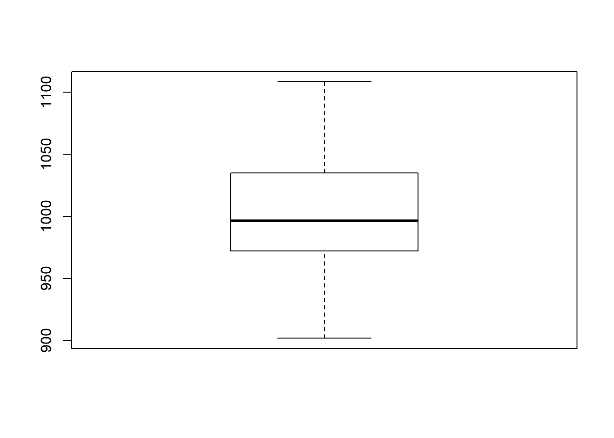
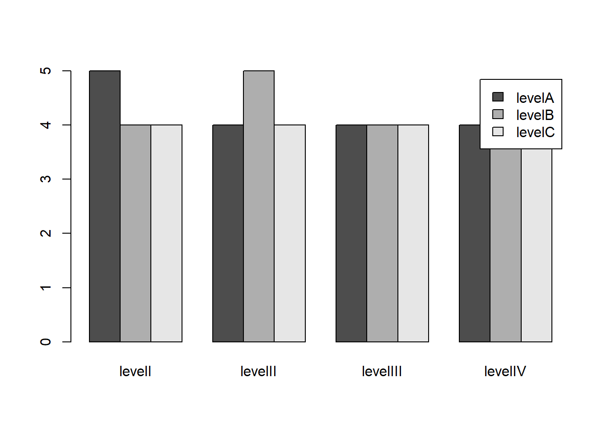
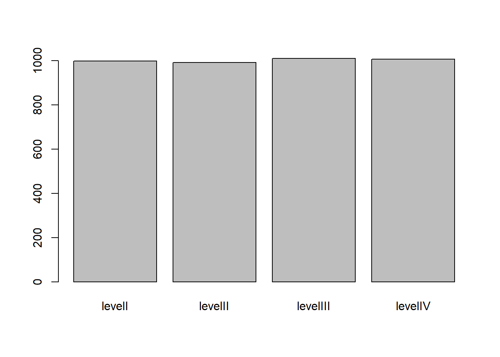
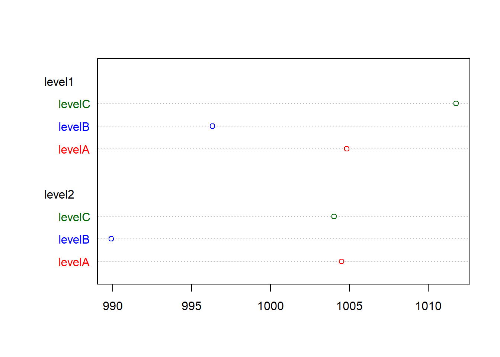
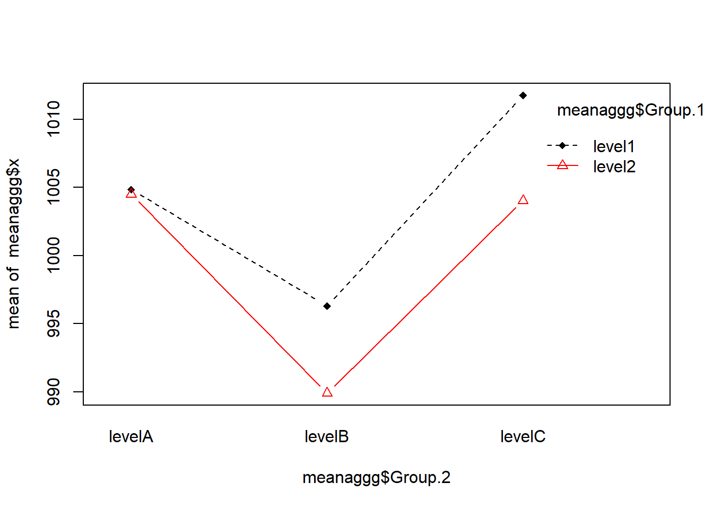

Unidade 8 Criação de Gráficos Básicos
O objetivo dessa sessão é a familiarização com os tipos básicos de gráfico que podem ser usados para descrever o comportamento e o relacionamento entre os dados de um estudo estatístico.
8.1 Sumário dos 5 números
O sumário dos 5 números é conhecido como um conjunto de estatísticas descritivas que revelam os percintis gerais mais significativos em uma amostra de dados. Estes são:
1. Mínimo
2. Primeiro quartil
3. Mediana
4. Terceiro quartil
5. MáximoPor exemplo, em R podemos obter esse sumário por meio do comando summary. Vamos carregar os dados “cars” que apresenta a velocidade e a distância de parada de alguns carros (gravado em 1920!).
help("cars")
data("cars")
summary(cars)8.2 Importância da visualização dos dados
Apesar das várias medidas estatísticas descritivas disponível, a Figura 8.1 mostra porque a visualização dos dados é muito importante.
![Artigo *Same Stats, Diferent Graphs* [@Matejka2017]](figuras/DinoSequential.gif)
Figura 8.1: Artigo Same Stats, Diferent Graphs (Matejka and Fitzmaurice 2017)
8.3 Tipos básicos de gráficos1
Inicialmente, será necessário simular alguns dados para serem usados como fonte na geração de gráficos. Os dados serão armazenados em um data frame contendo 3 variáveis categóricas (fatores em R) e 4 variáveis contínuas.
## Simulando os dados
## 3 variáveis categóricas
FacVar1 = as.factor(rep(c("level1", "level2"), 25))
FacVar2 = as.factor(rep(c("levelA", "levelB", "levelC"), 17)[-51])
FacVar3 = as.factor(rep(c("levelI", "levelII", "levelIII", "levelIV"), 13)[-c(51:52)])
## 4 variáveis númericas
set.seed(123) # referência para uniformizar as variáveis geradas
NumVar1 = round(rnorm(n = 50, mean = 1000, sd = 50), digits = 2) ## Distribuição Normal
NumVar2 = round(runif(n = 50, min = 500, max = 1500), digits = 2) ## Distribuição Uniforme
NumVar3 = round(rexp(n = 50, rate = 0.001)) ## Distribuição exponencial
NumVar4 = 2001:2050
simData = data.frame(FacVar1, FacVar2, FacVar3, NumVar1, NumVar2, NumVar3, NumVar4)8.4 Uma variávél contínua
8.4.1 Gráfico de pontos (scatter)
plot(simData$NumVar1, type = "o") ## Index plot8.4.2 Histograma
hist(simData$NumVar1) ## histogram8.4.3 Curva da densidade de probabilidade
plot(density(simData$NumVar1)) ## Kernel density plot
8.4.4 Boxplot
boxplot(simData$NumVar1) ## box plot8.5 Variável categórica (ou discreta)
8.5.1 Gráfico de barras (Total)
plot(simData$FacVar3) ## bar plot8.6 Duas Variáveis contínuas
plot(simData$NumVar1, type = "o", ylim = c(0, max(simData$NumVar1, simData$NumVar2))) ## index plot with one variable
lines(simData$NumVar2, type = "o", lty = 2, col = "red") ## add another variable8.6.1 Gráfico de densidade de probabilidade (density plots)
Exemplo de https://stat.ethz.ch/pipermail/r-help/2006-August/111865.html, onde um gráfico “vazio” é produzido e depois preeenchido com linhas (função lines()).
dv1 = density(simData$NumVar1)
dv2 = density(simData$NumVar2)
plot(range(dv1$x, dv2$x), range(dv1$y, dv2$y), type = "n", xlab = "NumVar1(red) and NumVar2 (blue)",
ylab = "Density")
lines(dv1, col = "red")
lines(dv2, col = "blue")8.6.2 Gráfico de pontos x,y (scatterplots)
plot(simData$NumVar1, simData$NumVar2)8.7 Duas Variáves categóricas
8.7.1 Mosaico (Mosaic plot)
plot(table(simData$FacVar2, simData$FacVar3))
8.7.2 Gráfico de Barras (barplots)
bartable = table(simData$FacVar2, simData$FacVar3) ## get the cross tab
barplot(bartable, beside = TRUE, legend = levels(unique(simData$FacVar2))) ## plot8.7.3 Barras Empillhadas (stacked)
barplot(bartable, legend = levels(unique(simData$FacVar2))) ## stacked8.7.4 Barras Empillhadas 100% (stacked 100%)
Transformando a tabela para proporções
barplot(prop.table(bartable, 2) * 100,
legend = levels(unique(simData$FacVar2))) ## usando prop.table8.8 Duas variáveis: Uma categórica e outra numérica
8.8.1 Box plots: variáveis numéricas por categoria
plot(simData$FacVar1, simData$NumVar1)8.8.2 Gráfico de densidade de probabilidade por categoria
level1 = simData[simData$FacVar1 == "level1", ]
level2 = simData[simData$FacVar1 == "level2", ]
dv3 = density(level1$NumVar1)
dv4 = density(level2$NumVar1)
plot(range(dv3$x, dv4$x), range(dv3$y, dv4$y),
type = "n",
xlab = "NumVar1 at Level1 (red) and NumVar1 at Level2 (blue)",
ylab = "Density")
lines(dv3, col = "red")
lines(dv4, col = "blue")
8.8.3 Média de uma variável numérica considerando sua categoria
Verifique como funciona aggregate(), e qual é o retorno de cada função usada como argumento.
list(simData$FacVar3)
aggregate(simData$NumVar1, list(simData$FacVar3), mean)meanagg = aggregate(simData$NumVar1, list(simData$FacVar3), mean)
meanagg## Group.1 x
## 1 levelI 998.8154
## 2 levelII 992.0538
## 3 levelIII 1010.3125
## 4 levelIV 1006.7492dotchart(meanagg$x, labels = meanagg$Group.1) ## Dot Chart 
Gráfico de barras usando a média
barplot(meanagg$x, names.arg = meanagg$Group.1) ## Bar plot Questão: O gráfico anterior é aproproado para comparar as médias (um valor pontual)? Escolha um gráfico melhor :)
8.9 Três variáveis discretas (categorias ou fatores em R)
Arrumando os gráficos matricialmente com a função par()
par(mfrow = c(1, 2))
bar1table = table(level1$FacVar2, level1$FacVar3)
barplot(bar1table, beside = TRUE, main = "FacVar1=level1")
bar2table = table(level2$FacVar2, level2$FacVar3)
barplot(bar2table, beside = TRUE, main = "FacVar1=level2",
legend = levels(unique(level2$FacVar2)))par(mfrow = c(1,1)) #retornando ao normal8.10 Três Variáveis: Uma númérica e duas categóricas
8.10.1 Boxplot considerando a interação entre as duas variáveis categóricas
Considerando que cada variável aleatória tem 3 categorias, existem seis pares possíves, cada um podendo influenciar a variável contínua de maneira distinta.
boxplot(NumVar1 ~ interaction(FacVar1, FacVar2), data = simData)
8.10.2 Média da variável numérica para cada par de interação das variáveis categóricas
meanaggg = aggregate(simData$NumVar1, list(simData$FacVar1, simData$FacVar2),
mean)
meanaggg = meanaggg[order(meanaggg$Group.1), ]
meanaggg$color[meanaggg$Group.2 == "levelA"] = "red"
meanaggg$color[meanaggg$Group.2 == "levelB"] = "blue"
meanaggg$color[meanaggg$Group.2 == "levelC"] = "darkgreen"
meanaggg## Group.1 Group.2 x color
## 1 level1 levelA 1004.8489 red
## 3 level1 levelB 996.3175 blue
## 5 level1 levelC 1011.7713 darkgreen
## 2 level2 levelA 1004.5125 red
## 4 level2 levelB 989.9144 blue
## 6 level2 levelC 1004.0450 darkgreendotchart(meanaggg$x, labels = meanaggg$Group.2, groups = meanaggg$Group.1, color = meanaggg$color) ## dotchart
8.10.3 Gráfico de interação (interaction plot)
Uma categoria eixo x e a outra no símbolo utilizado.
interaction.plot(meanaggg$Group.2, meanaggg$Group.1, meanaggg$x, type = "b",
col = c(1:2), pch = c(18, 24)) ## interaction plot - line plots of means8.10.4 Gráfico de barras
Veja a dificuldade de identificar tais variações em um gráfico de barras
par(mfrow = c(1, 2))
meanaggg## Group.1 Group.2 x color
## 1 level1 levelA 1004.8489 red
## 3 level1 levelB 996.3175 blue
## 5 level1 levelC 1011.7713 darkgreen
## 2 level2 levelA 1004.5125 red
## 4 level2 levelB 989.9144 blue
## 6 level2 levelC 1004.0450 darkgreenlevel1 = meanaggg[meanaggg$Group.1 == "level1", ]
level2 = meanaggg[meanaggg$Group.1 == "level2", ]
barplot(level1$x, names.arg = level1$Group.2, main = "FacVar1=level1")
barplot(level2$x, names.arg = level2$Group.2, main = "FacVar1=level2")par(mfrow = c(1, 1))8.11 Três variáveis: Duas numéricas e uma variável categórica
8.11.1 Gráfico de pontos usando cor
Aqui a cor é utilizada para identificar o valor da variável categorica
plot(simData$NumVar1, simData$NumVar2, col = simData$FacVar1)
legend("topright", levels(simData$FacVar1), fill = simData$FacVar1)#Usando pontos sólidos para melhorar a visiualização
plot(simData$NumVar1, simData$NumVar2, col = simData$FacVar1, pch = 19)
legend("topright", levels(simData$FacVar1), fill = simData$FacVar1)8.12 Três variáveis numéricas
8.12.1 Gráficos de Linhas
Considerando que NumVar4 varia de 2001 até 2050, vamos assumir que a mesma representaria uma data aque será usada no eixo x
plot(simData$NumVar4, simData$NumVar1, type = "o",
ylim = c(0, max(simData$NumVar1, simData$NumVar2))) ## join dots with lines
lines(simData$NumVar4, simData$NumVar2, type = "o", lty = 2, col = "red") ## add another line Observe que
Observe que lines() permite que a gráfico poderá ser montado em níveis. Essa é uma funcionalidade muito útil, mas ainda limitada no sistema de gráficos do pacote básico. Veremos mais adiante um pacote mais poderoso implementado para explorar melhor esta possibilidade.
8.12.2 Gráfico de bolhas2
Esse é um gráfico que incorpora nos pontos definidos pelas variáveis NumVar1 and NumVar2 a informação da variável NumVar3, usando seu valor para definir o tamanho do ponto a ser plotado.
radius <- sqrt(simData$NumVar3/pi)
symbols(simData$NumVar1, simData$NumVar2, circles = radius, inches = 0.25, fg = "white",
bg = "red", main = "Tamanho dado por NumVar3")8.12.3 Gráfico de pares
Finalmente, um gráfico de pontos (Scatterplot) na forma de uma matriz simétrica que apresenta a correlação espacial entre os pares das variáveis numéricas, coloridas por uma variável discreta.
pairs(simData[, 4:7], col = simData$FacVar1, pch = 19)
Na verdade, a medida que vamos incrementando a apresentação de mais informações nos gráficos, os comandos passam a ganhar maior complexidade quando usamos apenas o pacote base. No próximo capítulo veremos um pacote especialmente implementado para lidar com essa problemática, facilitado em muito a criação de gráficos mais informativos.
References
Matejka, Justin, and George Fitzmaurice. 2017. “Same Stats, Different Graphs.” Proceedings of the 2017 CHI Conference on Human Factors in Computing Systems - CHI ’17, 1290–4. doi:10.1145/3025453.3025912.
Esse conteúdo foi adaptado do site http://bl.ocks.org/patilv/raw/7360425/.↩
http://flowingdata.com/2010/11/23/how-to-make-bubble-charts/↩